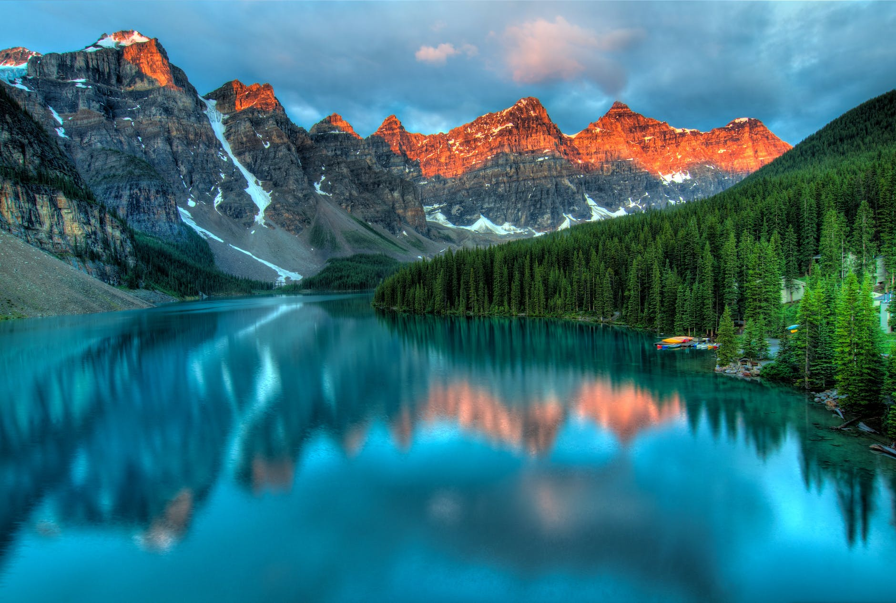

Discover Canada Tour
Banff National Park
by Moe Z
Banff National Park is Canada's first national park, established in 1885 as Rocky Mountains Park. Located in Alberta's Rocky Mountains, 110–180 kilometres (68 112 mi) west of Calgary, Banff encompasses 6,641 square kilometres (2,564 sq mi)[3] of mountainous terrain, with many glaciers and ice fields, dense coniferous forest, and alpine landscapes. Provincial forests and Yoho National Park are neighbours to the west, while Kootenay National Park is located to the south and Kananaskis Country to the southeast. The main commercial centre of the park is the town of Banff, in the Bow River valley.
The Canadian Pacific Railway was instrumental in Banff's early years, building the Banff Springs Hotel and Chateau Lake Louise, and attracting tourists through extensive advertising. In the early 20th century, roads were built in Banff, at times by war internees from World War I, and through Great Depression-era public works projects.[4] The Icefields Parkway extends from Lake Louise, connecting to Jasper National Park in the north.
History
.jpg)
Archaeological evidence found at Vermilion Lakes indicates the first human activity in Banff to 10,300 BP.[9] Prior to European contact, the area that is now Banff National Park was home to many Indigenous Peoples, including the Stoney Nakoda, Ktunaxa, Tsuut'ina, Kainaiwa, Piikani, Siksika, and Plains Cree.[10][11] Indigenous Peoples utilized the area to hunt, fish, trade, travel, survey and practice culture.[10][11] Many areas within Banff National Park are still known by their Stoney Nakoda names such as Lake Minnewanka and the Waputik Range. Cave and Basin served as an important cultural and spiritual site for the Stoney Nakoda.[11]